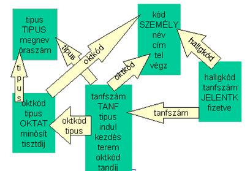

8.1. Tanfolyamszervezés
Ismertetés
Egy intézmény rövid tanfolyamokat hirdet. Néhány tanfolyamból több is indulhat (pl. havonta, ha van rá jelentkező). Az adott tanfolyamnak van egy oktatója, tandíja, kezdete, helyszíne és sok hallgatója; az azonos típusú tanfolyamoknak neve, óraszáma. A hallgatók azokból a jelentkezőkből lesznek, akik fizettek. Oktató is lehet valahol hallgató. Egy oktató az általa vállalt típusú tanfolyamokat különböző minősítéssel (a legutolsó tanfolyamának hallgatói véleménye alapján, 1-5 közötti érték) és tiszteletdíjért (korlátozott egész szám) tartja meg.
Az adatbázis felállítása egyszerű: Vannak az eszmei tanfolyamok (ezek a tanfolyam-típusok), melyekből konkrét tanfolyamszámokkal indítanak el képzéseket. A kiírás szerint a konkrét tanfolyamnak van tandíja, tehát ugyanaz a tanfolyam többe kerülhet szeptemberben, mint márciusban.
TIPUS {típus, megnevezés, óraszám}
TANFOLYAM {tanfszám,
típus, indul, kezdés, terem, tandíj, oktatókód}
Ha hallgatóról és oktatóról is ugyanazokat az adatokat
tároljuk, akkor egy táblában is lehetnek.
SZEMÉLY {kód, név, cím, tel, végzettség}
Egy konkrét tanfolyamra sok hallgató jelentkezik, és egy
hallgató több tanfolyamra is jelentkezhet:
JELENTKEZÉS {hallgatókód, tanfszám, fizetve}
Mivel az oktató több tanfolyam-típust is vállalhat, letároljuk,
miket tud oktatni. Ugyanakkor egy típusra több oktatónk is lehet.
OKTAT {oktatókód, típus, minősítés, tiszteletdij}
A minősítést csak az első oktatást követően lehet kitölteni a hallgatói értékelést követően. Ebből a táblából lehet választott sorrend (minősítés szerint csökkenő/tiszteletdíj szerint növekvő) alapján oktatót keresni egy induló tanfolyam előtt.
A kapcsolatok tisztán látszanak:

(Minden nyíl sokból az egybe mutat a ráírt külső kulcson keresztül.)
Döntsük el, igazak-e az alábbi funkcionális függőségek:
(Útmutató: minden kulcs egyértelműen meghatározza saját táblája minden tulajdonságát.)
- {tanfszám} → {megnev, óraszám}
- {hallgkód} → {végz}
- {hallgkód, tipus} → {tandij}
- {név, cím, tanfszám} → {fizetve}
- {tanfszám, hallgkód} → {óraszám}
- {tanfszám} → {tisztdij}
- {indul, kezdés,oktkód} → {minősít}
Az egyes táblákban hány mintasorral oldható meg a következő esemény rögzítése?
„Rendes Elek tartja majd a jövő hétfőn induló MS Access kezdő tanfolyamot 8000 Ft óradíjért. A tanfolyam 30 órás, a B teremben lesz, tandíja 88000 Ft fejenként és van rá 5 jelentkező."
Mi a feltétele az alábbi karbantartó funkciók elvégzésének?
- 1 TANFOLYAM felvitele
- 1 TÍPUS módosítása
- 1 JELENTKEZÉS törlése